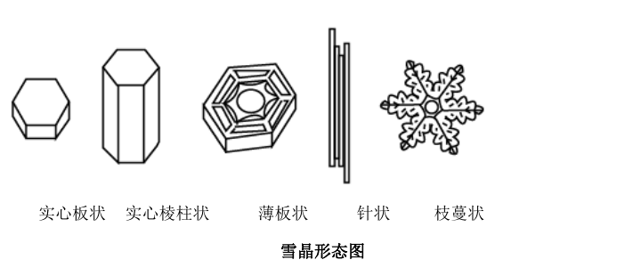
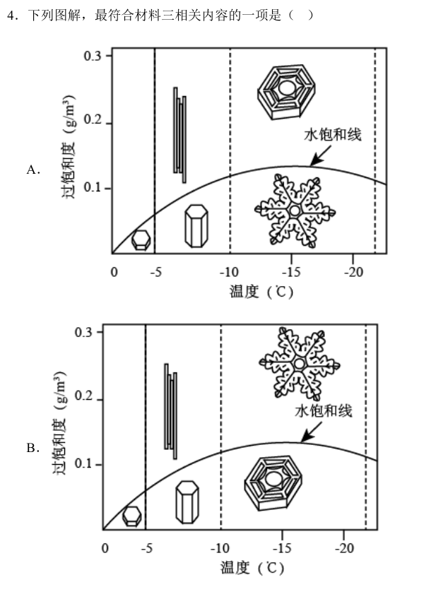
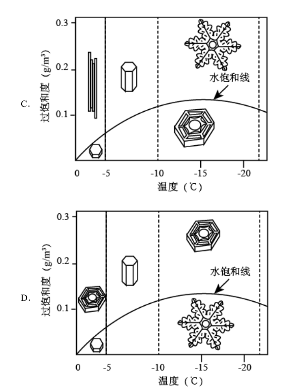

真题 · 非连续文本阅读
雪花六瓣之谜
比较雪花六瓣的古代记载、开普勒的成因猜想及现代雪晶形态图。
导读
文体与题材：科学史与雪晶形态研究的组合材料。
出处：三则材料分别摘编自杨振宁《对称与物理》、尹传红《由雪引发的科学实验》、肯尼思·利布雷希特《冰的形态发生：雪晶中的物理学》。
内容脉络：材料一并置中国古代对雪花六瓣的记载与开普勒的研究；材料二说明开普勒提出机制猜想及后来的显微观察；材料三以温度、过饱和度解释雪晶基本形状与结构复杂性的变化。
主旨：对雪花形态的科学认识经历由现象记载、成因猜想到观察与条件分析的推进；雪晶的形态受温度和过饱和度共同影响。
阅读重点：区别形状记录与成因解释，核对“只能”“可能”的模态差异，并按温度、过饱和度两条坐标判读图解。
原文
原文按结构分节；随文内容可定位至对应段落。
材料二：开普勒提出成形机制猜想，显微观察拓展形态记录。
17世纪初，雪花吸引了德国天文学家开普勒的眼光。当穿过布拉格的一座大桥时，他注意到落在衣服上的一片雪花，并因此思考它六角形的几何形状。开普勒认为雪花呈六角形的原因不能通过“材质”寻找，因为水汽是无形且流动的，原因只能存在于某种机制中。进而，他猜想这个机制可能是冰“球”的有序堆积过程。显微镜发明之后，雪花成了大受欢迎的观察对象。英国物理学家罗伯特·胡克在1665年出版的《显微术》一书中，展现了他借助显微镜画出的雪花图片，并对雪花晶体结构进行了阐述，这被看作是人类首次具体记录雪花的形态。
（摘编自尹传红《由雪引发的科学实验》）
材料三：温度主导基本形状，过饱和度影响雪晶结构。
雪晶会根据其形成的云层中的温度和过饱和度的不同而生成不同的形状，在一些温度范围内雪晶呈柱状，在另一些温度范围内则呈板状。随着过饱和度的升高，雪晶变得越来越大，形状也越来越复杂。雪晶的基本形状主要取决于温度：在-2℃左右时呈板状，在-5℃左右时呈柱状，在-15℃左右时又呈板状，在低于-25℃时呈柱状或板状。雪晶的结构更多地取决于过饱和度，即取决于生成速度：当湿度高时，快速生成的柱状晶体会变成轻软的针状晶体，而六角形板状晶体会变成星状的枝蔓晶体。随着温度的下降，雪晶的形状会在板状和柱状之间来回变化好几次，而且变化很大：在几度温差范围内，雪晶会从又细又长的针状晶体（-5℃）变为薄而平的板状晶体（-15℃）。
（摘编自肯尼思·利布雷希特《冰的形态发生：雪晶中的物理学》）

第1题 · 图解核验
下列图解，最符合材料三相关内容的一项是（3分）
四幅图均以温度为横轴、过饱和度为纵轴，标出水饱和线及板状、柱状、针状、枝蔓状雪晶的位置。请对照原卷图解判断。


参考答案1展开 / 收起
参考作答
B。
文本分析
A项查看证据 ↗
错误。材料三指出过饱和度升高使雪晶形态更复杂；A图却把约-15℃的薄板状置于枝蔓状上方，即更高过饱和度区域，次序相反。
B项查看证据 ↗
正确。-5℃附近在低过饱和度下呈柱状，较高时可呈针状；-15℃附近在低过饱和度下呈板状，较高时可成枝蔓状。图示同时满足温度与过饱和度两项条件。
C项查看证据 ↗
错误。C图把约-5℃的实心棱柱状置于较高过饱和度区，位置应与更高湿度条件下的针状区区分；其柱状与针状的纵向安排失准。
D项查看证据 ↗
错误。D图在约-15℃处把薄板状放在高过饱和度区、枝蔓状放在低区；还把接近-2℃的薄板状误置高过饱和度区，未遵守材料三给出的条件关系。
知识点
第2题 · 信息辨析
下列对材料相关内容的概括和分析，正确的一项是（3分）
A．关于雪花具有对称的六角形结构这一事实，《韩诗外传》中“凡草木花多五出，雪花独六出”是世界上最早的表述。
B．开普勒思考雪花是六瓣的原因，只是出于对几何和对称的兴趣，因此他的研究没有向前推进，也没有得出可信的结论。
C．开普勒认为雪花呈六角形与水汽无关，原因可能存在于某种机制中，但是受到当时的知识限制，他没有再对此机制作出解释。
D．雪晶的具体形状是受到温度和过饱和度的共同作用而形成的，其基本形状主要取决于温度，过饱和度则会影响雪晶结构的复杂性。
参考答案2展开 / 收起
参考作答
D。
文本分析
A项查看证据 ↗
错误。材料一称《韩诗外传》最先在文献上记载“雪花六出”，并未说它解释了对称的六角形结构；选项也把文献记载的先后扩大为世界上一切表述的先后。
B项查看证据 ↗
错误。兴趣促使开普勒研究；当时知识不足才限制成因解释。选项用“因此”错误连接动机与局限，还否认了材料二所记载的机制猜想。
C项查看证据 ↗
错误。“不能通过材质寻找”不等于雪花形成“与水汽无关”；原文认为原因只能存在于某种机制中，而非“可能”。开普勒还提出冰“球”有序堆积的猜想。
D项查看证据 ↗
正确。材料三开篇说温度和过饱和度共同影响雪晶形态，继而分别说明基本形状主要受温度影响、结构复杂性随过饱和度变化。
知识点
第3题 · 科学研究启示
开普勒关于雪花的思考对科学研究有什么意义？给我们带来哪些启示？请简要说明。（6分）
参考答案3展开 / 收起
参考作答
- 研究意义：开普勒由六瓣现象转向六角形成因，提出需从成形机制寻求解释，并以冰“球”有序堆积作试探性猜想，为后来观察和研究雪晶形态提供了问题与思路。
- 观察与提问：对日常现象保持兴趣和敏感，辨认值得解释的问题；开普勒由落在衣服上的雪花追问其六角形几何形状。
- 推理与检验：依据已知事实审查解释的可能性，提出可供后续观察与研究的假设；同时承认时代知识不足，区别研究方向的价值与假说是否已被证实。
文本分析
问题推进查看证据 ↗
材料一对照“记载六瓣”与“研究为何六瓣”，说明开普勒的贡献首先在于提出成因问题。
机制假设查看证据 ↗
材料二按观察、排除单纯材质解释、提出机制方向、猜想冰“球”堆积的顺序展开。启示应从这些具体思维活动归纳，不能把未证实的猜想写成定论。
科学认识的条件查看证据 ↗
材料一指出当时知识不足以解释成因，材料二叙述显微镜出现后的具体形态记录；新的观察手段会推动假说检验与解释的修正。
知识点
参考文献
2022年普通高等学校招生全国统一考试语文全国乙卷，第4—6题；三则材料的篇名见导读。